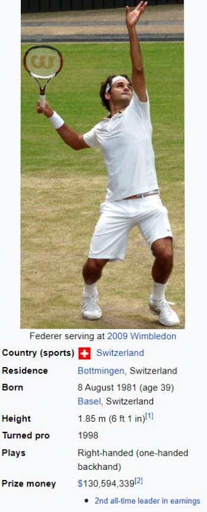

BIOGRAFAIRY
| Home
|
Science
|
Technology |
politics
|
Drama/acting
| Literature
|
Sports
|
|---|
|  |
Federer has been world No. 1 in the ATP rankings a total of 310 weeks – including a record 237 consecutive weeks – and has finished as the year-end No. 1 five times. Federer has won 103 ATP singles titles, the second-most of all-time behind Jimmy Connors and including a record six ATP Finals.
Federer has played in an era where he dominated men's tennis together with Rafael Nadal and Novak Djokovic, who have been collectively referred to as the Big Three and are widely considered three of the greatest tennis players of all-time.[c] A Wimbledon junior champion in 1998, Federer won his first Grand Slam singles title at Wimbledon in 2003 at age 21. In 2004, he won three out of the four major singles titles and the ATP Finals,[d] a feat he repeated in 2006 and 2007. From 2005 to 2010, Federer made 18 out of 19 major singles finals. During this span, he won his fifth consecutive titles at both Wimbledon and the US Open. He completed the career Grand Slam at the 2009 French Open after three previous runner-ups to Nadal, his main rival up until 2010.
A versatile all-court player, Federer's perceived effortlessness has made him highly popular among tennis fans. Originally lacking self-control as a junior, Federer transformed his on-court demeanor to become well-liked for his general graciousness, winning the Stefan Edberg Sportsmanship Award 13 times. He has also won the Laureus World Sportsman of the Year award a record five times. Outside of competing, he played an instrumental role in the creation of the Laver Cup team competition. Federer is also an active philanthropist.
Roger Federer was born on 8 August 1981 in Basel, Switzerland.[5] His Swiss father, Robert Federer, is from Berneck in the Canton of St. Gallen, and his Afrikaner mother, Lynette Federer (née Durand), is from Kempton Park, Gauteng, in South Africa. He has one sibling, his older sister, Diana,[6] who is the mother of a set of twins.[7] Since Federer’s mother is South African, he holds both Swiss and South African citizenship.[8] He grew up in nearby Birsfelden, Riehen, and then Münchenstein, close to the French and German borders, and he speaks Swiss German, Standard German, English, and French fluently, as well as functional Italian and Swedish; Swiss German is his native language.[5][9][10][11] Federer served as a ball boy at his hometown Basel tournament, the Swiss Indoors, in 1992 and 1993.[
Like all male Swiss citizens, Federer was subject to compulsory military service in the Swiss Armed Forces. However, in 2003 he was ruled "unsuitable" and was subsequently not required to fulfill his military obligation.[13] Instead, he served in the civil protection force and was required to pay 3% of his taxable income as an alternative.[14] He grew up supporting FC Basel and the Swiss national football team.[15] Federer also credits his hand-eye coordination to the wide range of sports he played as a child, including badminton and basketball
At the 2004 Summer Olympics in Athens, Federer was the clear favorite after claiming the world No. 1 ranking earlier in the year and capturing the Australian Open and Wimbledon titles. However, he lost in the second round to 18-year-old Tomáš Berdych. In doubles, he and compatriot Yves Allegro lost in the second round.
At London 2012, Federer won his first singles medal, losing to Andy Murray in the final to claim the silver. He and Wawrinka failed to defend their gold medal in doubles, losing in the second round to Jonathan Erlich and Andy Ram of Israel.
Federer did not compete in the 2016 Rio Olympics after taking the rest of the season off after Wimbledon to recover from a knee injury.Similarly, Federer chose not to compete in the 2020 Tokyo Olympics due to a setback to recovering from a knee surgery.
Federer is married to former Women's Tennis Association player Miroslava Federer (née Vavrinec), whom he met while they were both competing for Switzerland at the 2000 Sydney Olympics. Usually called Mirka, she retired from the tour in 2002 because of a foot injury.[17] They were married at Wenkenhof Villa in Riehen near Basel on 11 April 2009, surrounded by a small group of close friends and family.[18] In 2009, Mirka gave birth to identical twin girls.[19] The Federers had another pair of identical twins in 2014, this time boys
Roger Federer has huge popularity in the world of sport, and because of his achievements, Federer is widely considered to be one of the greatest tennis players of all time, with many players and analysts in the period between 2009 and 2017 considering him to be the greatest player ever.[e] He has also been called the greatest athlete of his generation.[371][372] Tennis.com listed him as the greatest male player of the Open Era.[373] Federer himself has downplayed these claims, stating in 2012 that it is impossible to compare tennis players from different eras and that past champions are needed to pave the way for future champions.[374] In May 2020, the Tennis Channel ranked Federer as the greatest male tennis player of all time.[375] In July 2021, BBC Sport users picked Federer as the greatest ever male tennis player.
In December 2019, Federer became the first living person to be celebrated on Swiss coins. His face will be on the 20-franc coin and in May 2020, Swissmint issued a Federer 50-franc gold coin featuring a different design.
In December 2019 Roger Federer was voted by the readers as the Most Stylish Man of the Decade (2010–2019) in GQ. He was first in the list, ahead of Timothée Chalamet, LeBron James, Harry Styles, David Beckham, Justin Bieber, Kanye West, Ryan Gosling and others
On 20 July 2020 Federer was featured by Swiss National Museum in a 100-part chronicle of Swiss history and culture